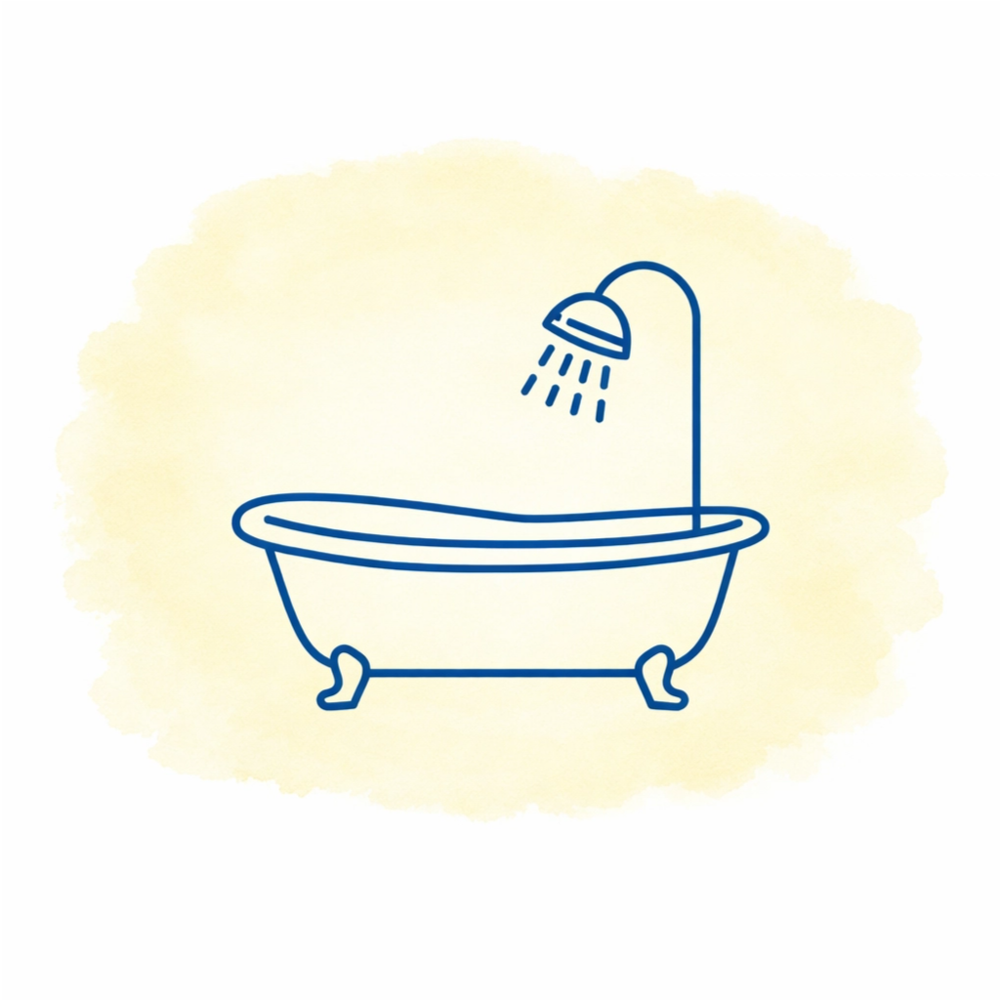

簡単な質問に答えるだけで、
理想のバスルームをご提案します。
質問内容
診断結果
分析中...
診断結果はいかがでしたか？😊
この画面をスクショして、 公式LINEに送ってください。
あなたの診断結果をもとに、 「あなた向けの水廻り選びポイント」を 無料でお伝えします✨
簡単な質問に答えるだけで、
理想のバスルームをご提案します。
この画面をスクショして、 公式LINEに送ってください。
あなたの診断結果をもとに、 「あなた向けの水廻り選びポイント」を 無料でお伝えします✨